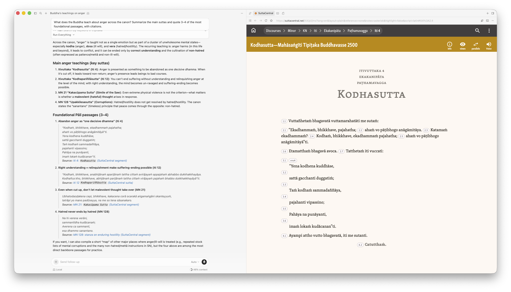
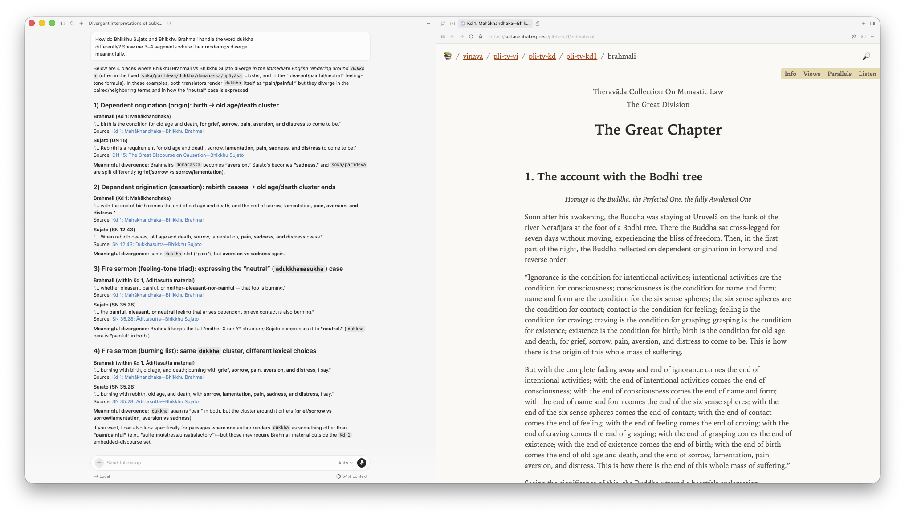
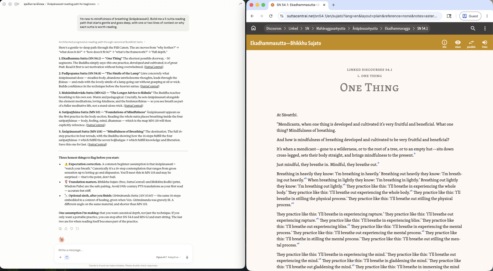
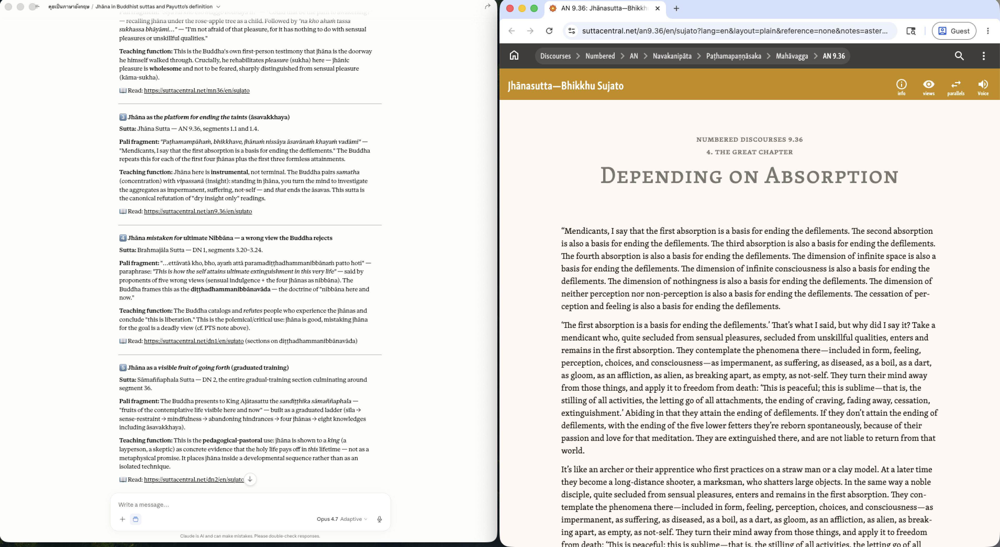
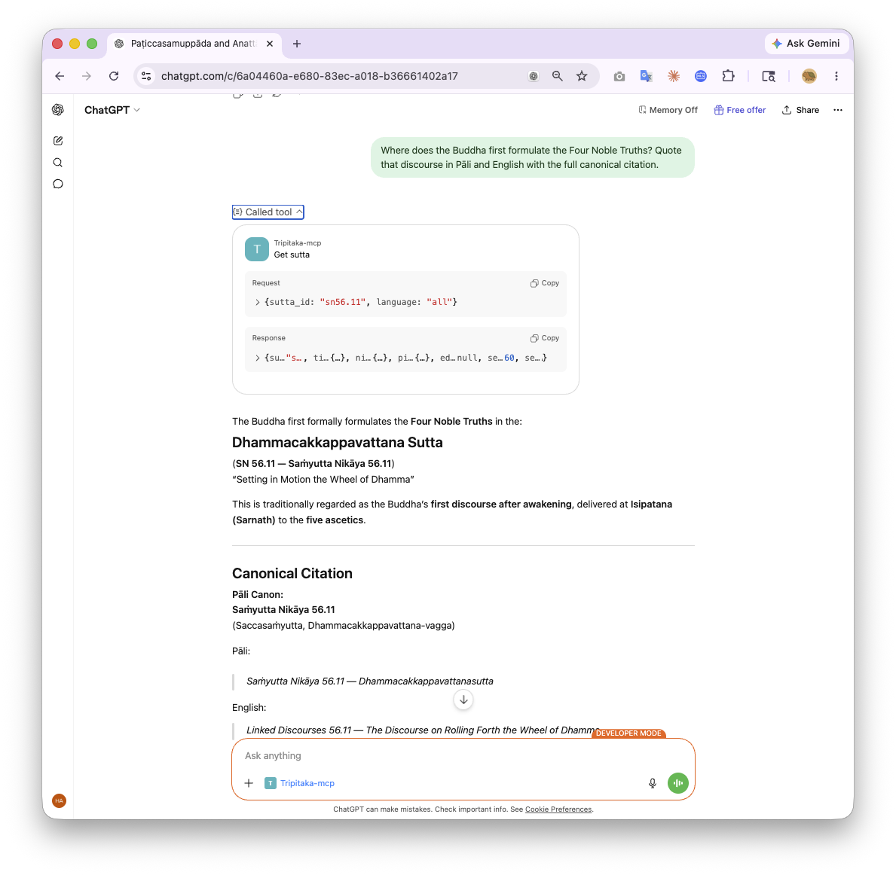
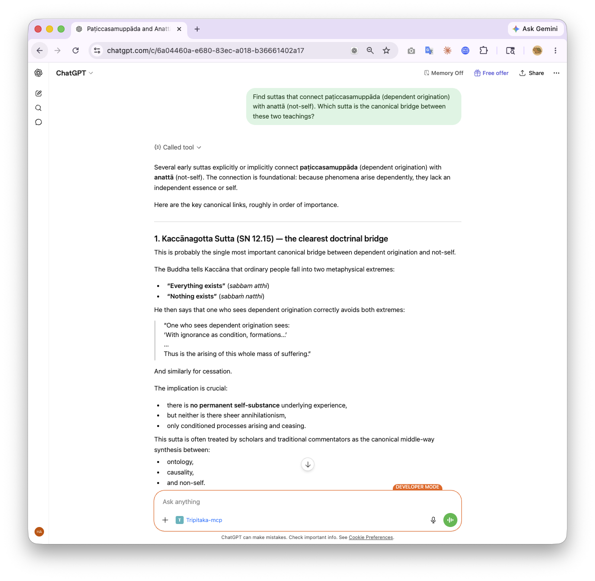

← Tripitaka MCP
Use cases
What people actually ask, and what the assistant does behind the scenes.
Six worked examples of aggregation-style questions — the kind where you don't already
know which sutta or segment you need. The assistant picks the right tools, fetches verbatim
text from SuttaCentral bilara-data, and includes clickable
cross_reference URLs back to the source on every quoted segment. Click through any
of those to verify the canonical reference yourself.
For a long sutta the assistant doesn't dump the whole thing — it opens the table of contents
first (get_sutta(…, mode="outline")), then fetches just the section it needs, or the
segments around a search hit (around="…"). So even DN 16 (1,664 segments) stays a
precise lookup rather than a context-window flood.
01
Thematic survey
"What does the Buddha teach about anger across the canon?"
What does the Buddha teach about anger across the canon? Summarize the main suttas and
quote 3–4 of the most foundational passages, with citations.
Why this is hard: the canon uses several Pāli words for anger and its relatives —
kodha, dosa, byāpāda, āghāta — and the relevant teachings
sit in different nikāyas. A plain keyword search would miss most of it; semantic search picks
up the conceptual neighbourhood.
Tools used: search_hybrid (one call, picks up varied vocabulary) →
get_sutta on the top 3–5 matches → synthesis with all
cross_reference URLs preserved as clickable links.

02
Translation comparison
"How do different translators handle a key Pāli term?"
How do Bhikkhu Sujato and Bhikkhu Brahmali handle the word dukkha differently?
Show me 3–4 segments where their renderings diverge meaningfully.
The single most heated word in Pāli–English translation. Bhikkhu Sujato leans toward
"suffering" with calibration; the older Pali Text Society tradition reaches for "stress" or
"unsatisfactoriness". This is the kind of question where reading a single translation hides
the interpretive choice — the comparison surfaces it.
Tools used: search_by_keyword(dukkha) for occurrences →
compare_translations on segment-aligned text across editions →
formatted side-by-side output.

03
Topical reading path
"Build me a study path for someone new to a topic."
I'm new to mindfulness of breathing (ānāpānassati). Build me a 5-sutta reading path that
starts gentle and goes deep, with one or two lines of context on why each sutta is worth
reading.
A reading-list shape that's standard for teachers + study groups, but tedious to assemble by
hand. The assistant uses the canon's structure (list_structure) to pick across
nikāyas, then fetches citations and a brief description for each.
Tools used: list_structure → search_hybrid on the topic →
get_reference for each of the 5 suttas chosen → pedagogical commentary.

04
Pāli word study
"Definition + canonical usage of a Pāli word"
What does jhāna mean according to the Payutto dictionary, and show me 5 sutta
passages where the Buddha uses it in different teaching contexts.
The dictionary lookup alone is useful, but for technical terms like jhāna,
sati, or samādhi, the meaning lives in usage, not the definition.
This use case shows the dictionary bridge feeding into canonical context examples.
Tools used: get_word_definition(jhāna) (Payutto + PTS + DPPN) →
search_by_keyword for occurrences → get_sutta on 5 contrasting
passages → grouped output with context.

05
Locus classicus
"Where does a foundational teaching originate?"
Where does the Buddha first formulate the Four Noble Truths? Quote that discourse in
Pāli and English with the full canonical citation.
Identifying the locus classicus — the canonical first statement — is the kind of
question scholars and serious students reach for. The assistant resolves to
Dhammacakkappavattana (SN 56.11), fetches it verbatim, and surfaces the citation in
academic-paper-ready form.
Tools used: search_hybrid(four noble truths) → get_sutta(sn56.11)
for full text → get_reference for the formatted citation string.

06
Concept network
"Where do two teachings intersect?"
Find suttas that connect paṭiccasamuppāda (dependent origination) with
anattā (not-self). Which sutta is the canonical bridge between these two
teachings?
Doctrinal cross-reference work — given two technical teachings, find where the canon links
them. This is exactly the shape of question that gets asked in graduate Buddhist studies and
serious Dhamma study groups, and it's painful to do by hand.
Tools used: search_hybrid for each concept → intersect candidates → most-likely
canonical bridge identified → get_sutta for the bridge sutta + supporting
references.

Try one of these yourself.
Pick a client, paste the question, see what comes back.
Install in 1 click →
Privacy·Terms·GitHub